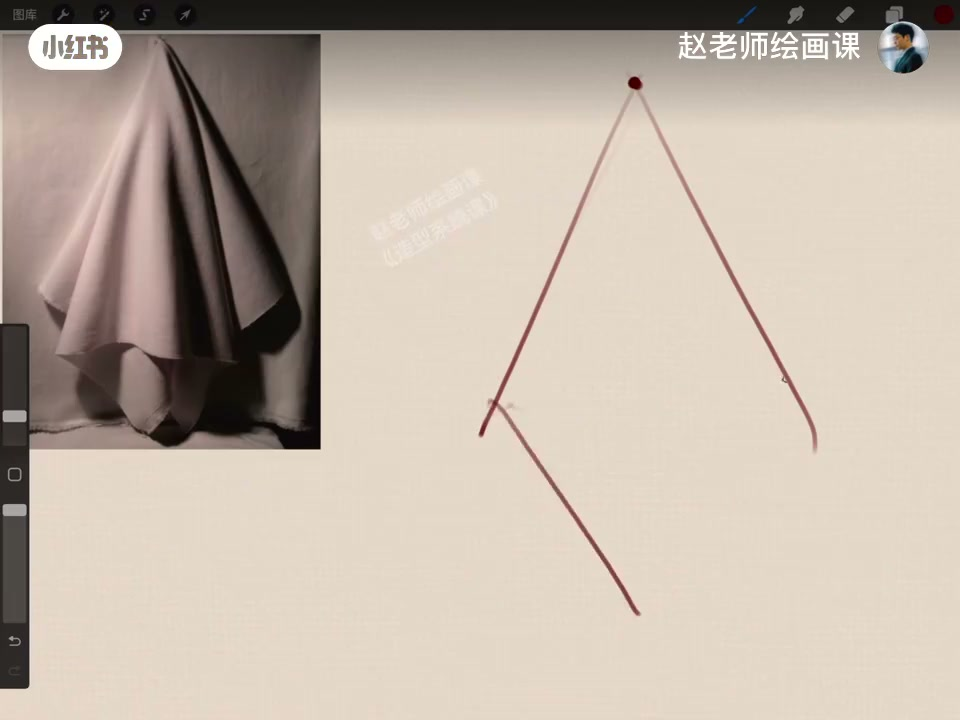
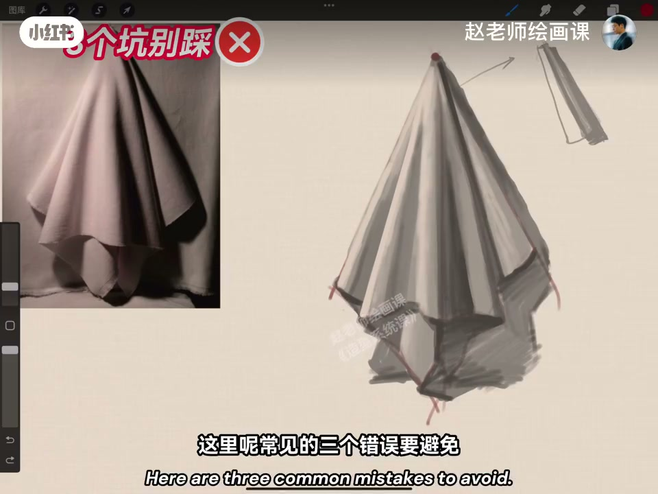
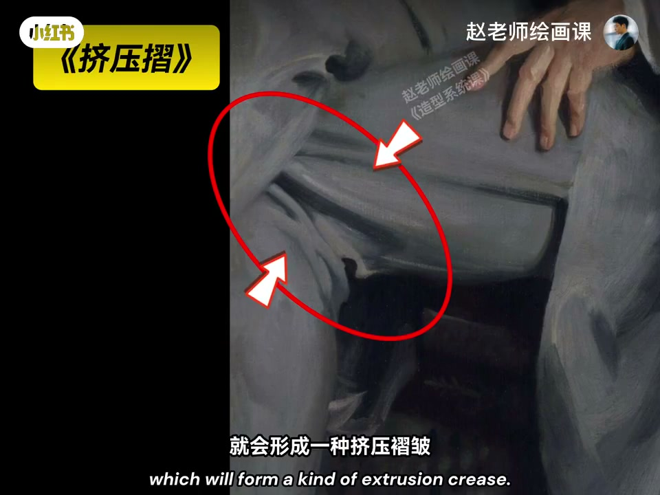
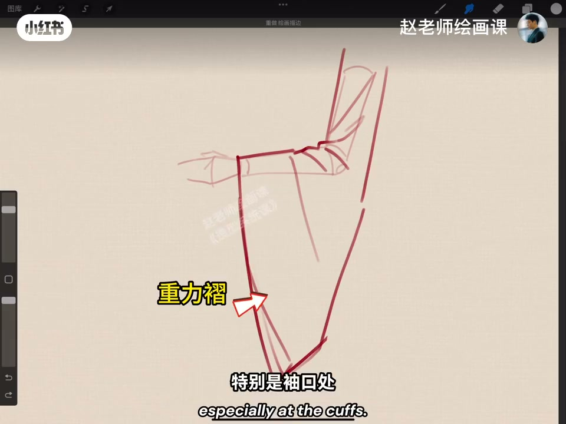

内容要点
布褶画成蚯蚓，往往因为没先理解力。重力：挂点拎起，折子下垂成垂落折；可有多挂点甚至一圈（裙子），整体发散、垂直地面、细到粗；外形可像菱形，主折当圆柱统一光源，闭塞最深、反光勿跳；避粗细一样、缺主次、无下垂感三错。挤压力：对向挤或堆叠成挤压褶，本质是褶子菱形里藏错落三角——关节角越大越密越扁；一侧挤另一侧较平，折有厚度且走势反映体块。衣袖默写上挤下垂，两力常同时出现。
知识结构
垂落折；圆柱塑；三错误。
褶子菱形；角大越密；反映体块。
上挤下垂；裁剪定轮廓。
衣褶先认力：垂落看挂点与下垂，挤压看菱形三角与体块，两力叠加再默写。
00:00-01:29重力与垂落折
为什么你的布褶像蚯蚓，大师寥寥几笔却活灵活现？先理解力。第一种重力：布被挂点拎起，折子因重力下垂——垂落折。挂点可两个、四个甚至一圈（裙子）；折皱发散、整体垂直地面、由细到粗。
画时大外形可略如菱形，一条主折体现走向；把折当圆柱统一光源，闭塞区光线进不来最深，反光别太跳。三错：粗细一样、缺主次均匀分布、没有下垂感。00:50／01:15 证据。


01:29-02:36挤压力与挤压褶
第二种力挤压力：两物对向挤布料（腋下、膝弯）或堆堆裤自堆叠，形成挤压褶。说白了是褶子菱形，里面藏大小不一的三角形。规律：关节角度越大、布料越厚，折越明显越密，菱形／三角越扁，反之越宽。
先找菱形但勿机械；三角大小错落；一侧挤另一侧较平直；折本身有厚度；走势要反映下面体块。01:40《挤压褶》标注。

02:36-03:17古风衣袖：两力同现
现实中两力常同时出现。默写古风衣袖：上面压力折（布薄、关节角不大故不很显），下面可理解成重力折，袖口尤要垂落感；右侧轮廓来自袖子裁剪形状；中间折子与单挂点布同理。
理解力的作用，布褶简单多了。导流造型系统课。02:50 衣袖默写。

完整转录（86段）
以下文本由 Whisper medium 模型自动转录，可能存在少量识别误差，已尽可能修正。
为什么你画的布折像一堆蚯蚓
而大师聊了几笔就能活灵活践
哈喽大家好 我是赵正老师
要想画好布折啊
得先理解力的作用
我们先从第一种 重力开始
一块布悬浮在空中
那在重力的作用下
布被这个挂点拎起来
所有的折子呢都会因为重力而向下垂
这叫垂落折
当然啊 挂点呢不只有一个
还可能有两个
比如搭在两个指甲上的布
或者四个挂点的一块桌布
甚至一圈挂点
比如裙子等等
很明显啊
这种折皱是一种发散的状态
整体的形状呢是垂直于地面
折皱本身呢是由细到粗的一个变化
我们现在来画这块布
大的外形特征呢是有点像个菱形
一条主要的折皱来体现走向
在塑造的时候呢
把折皱本身来看作圆柱体
统一好光源
明暗就会变得很简单
凹进去的闭色区呢
因为光线是进不来的
所以呢 颜色是最深的
反光呢不要画得太跳
这里呢常见的三个错误要避免
第一个呢 叫折子粗细画成一样的
比如这样
第二呢 叫缺少阻刺
折皱分布的很均匀
会大大的降低眉感
第三个 叫没有下垂感
好了 我们来到第二种力
叫挤压力
两个物体对向挤压这个布料
比如叶下 膝盖弯曲处
就会形成一种挤压折皱
还有我们常穿的这种堆堆裤
布料自身堆叠的挤压
也会形成挤压折皱
那这些折皱说白了就是一个织子行李
这种织子行李藏着一堆大小不一样的三角形
有一个规律
叫关节角度越大 布料越厚
挤出来的折子就越明显 越密集
织子行或者三角形也就越扁
反之就越宽
我们在画的时候可以先找到这个织子行
但是要注意它们的变化
不要画得特别机械
那上面的三角形呢
也要注意大小错落的这种变化和区别
一侧挤压呢
另一侧一般是比较平直的
要注意挤压出来的折皱本身呢
是有厚度的
当然最重要的别忘了
折皱的走势呢
要反映下面的体块
好了 上面的两种折皱呢
在现实中啊 往往是同时出现的
我们现在来默写一个古风衣袖的样子
上面是压力折
布料比较薄
关节角度不大
所以这个折皱并不是很明显
下面呢 是可以理解成重力折
特别是袖口处
要注意这种垂落感
右侧的轮廓
来自于袖子本身裁剪的形状所决定
中间的折子
其实和我们刚才讲过的那块布
是一样的道理
好了 理解了力的作用
布折是不是简单多了
如果你想打好坚实的造型基础
让自己的想法不被手上能力限制
造型系统课上见 拜拜